File Handling
At Higher level you need to be able to read data from and write data to files. In Python you open a file with open(filename, mode) — where the mode is "r" to read or "w" to write — and you should always close() the file when you are finished.
Key Terms & Knowledge
Reading from a Text File
Reading from a file takes the contents of a file and adds it to your program. This allows the program to take large amounts of input from a file, instead of the user typing in all the required data.
Let's say a program takes in pupil test scores for 50 pupils. Instead of the user typing in all of this data, the program could instead read this data from a file. This is more efficient as it removes the time taken to type in the 50 scores, and prevents human error when typing the data.
Reading a Single Value
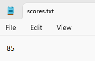
To retrieve saved data, open the file in read mode ("r"). The read() function retrieves all of the data at once into a single variable. Use this approach when the file only contains a single value that you have to read in.
# Open the file for reading
scorefile = open("scores.txt", "r")
highscore = scorefile.read()
print(highscore)
# Close the file
scorefile.close()
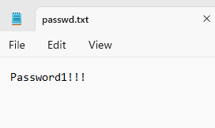
This program accesses a file named scores.txt containing a high-score value and displays it.
# Open the file for reading
passwordfile = open("passwd.txt", "r")
# Read the whole contents of the file
saved_password = passwordfile.read()
# Ask user to enter password
userpass = input("Enter your password")
if saved_password == userpass:
print("Access granted")
else:
print("Access denied")
# Close the file
passwordfile.close()
This program reads a password from passwd.txt, prompts the user for input, and checks whether the entries match.
Reading Multiple Lines

In the following example, we are going to read in multiple lines of data. We are only going to read in a single type of data — in this example, we will be reading in 10 names.
We start off by opening the file. In this case our file is called "names.txt". You can see the contents in the image opposite, or use the file tree on the left to check the file for yourself.
names_file = open("names.txt", "r")
Remember to use the "r" mode parameter so the program knows you are reading data.
Next, we have to read each line. Instead of using the read() function as we did in the previous example, we need to use the readlines() function, as we are reading multiple lines. So we would have:
names = names_file.readlines()
This will read each line into an array. In this case we are assigning the array returned by the readlines() function to the names variable. So names will store our list of names.
Any time you read in a multi-line file, you will need to loop through your data. As we now have an array of names, what we can do is:
for name in names:
This will loop through each name in the array.
To print out each name to check we have read the file correctly, we can then do:
for name in names: print(name)
Finally, once we are finished with the file, we close it:
names_file.close()
Reading from a File — Video Explanation
Reading from CSV File
A CSV (Comma Separated Values) file stores data that is separated by a comma.
For example, the following data on runners:
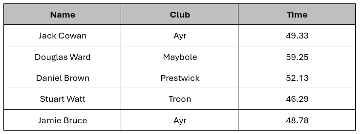
Could be stored in a CSV file, with each field of data separated by a comma, with each row on a new line.
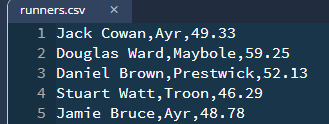
This allows us to "split" each line into its separate pieces of data.
So the first piece of data on each line, before the first comma, is the Name, the second piece of data, between the first and second commas, is the Club, and the last piece of data on each line, is the Time.
This structure makes it easy to split the data into individual fields, facilitating the creation of data structures like parallel arrays or arrays of records. CSV files are also human-readable and can be easily created or edited with spreadsheet software, making them versatile for data exchange between different applications or systems.
The file above is called runners.csv. The following is example code for how to read and split the data from this type of file. In the example, we are going to split into a Parallel Array.
Declare my 3 empty parallel arrays: names[], clubs[] & times[].
names = [] clubs = [] times = []
Open and read in the CSV file (runners.csv - this is the file you can see above.).
Remember, your python file must be in the same folder as the file you are trying to open, or you must use the correct filepath instead of just the file name.
runnerFile = open("runners.csv", "r")
Loop through each line in the file.
for line in runnerFile:
As there are 3 fields per line, we split each line by the comma. Each line then essentially becomes an array which we have called fields.
fields = line.split(",")
The variable fields, as mentioned above, would be stored as an array. On the first line, fields would look like:
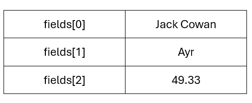
We then add each field to the appropriate array, declared at the start of the program.
names.append(fields[0]) clubs.append(fields[1]) # The default data type for data read from file is string. # As time needs to be a real number, we need to do this manually at the # time of import. times.append(float(fields[2]))
Close the file
runnerFile.close()
So the code would look like:
names = []
clubs = []
times = []
runnerFile = open("runners.csv", "r")
for line in runnerFile:
fields = line.split(",")
names.append(fields[0])
clubs.append(fields[1])
times.append(float(fields[2]))
runnerFile.close()
For an Array of Records, it is very similar, but instead of appending each individual piece of data to an array during the loop, we use each piece of data to build a record, which we then append to the array.
runnersArray = []
runnerFile = open("runners.csv", "r")
for line in runnerFile:
fields = line.split(",")
runnerName = fields[0]
runnerClub = fields[1]
runnerTime = float(fields[2])
runnerRecord = {"rName": runnerName, "rClub": runnerClub, "rTime": runnerTime}
runnersArray.append(runnerRecord)
runnerFile.close()
Video Explainer
Watch the following video for further information on CSV files and how we can read data in from these into either of the Higher Data Structures (Parallel Arrays or Array of Records)
Reading from CSV Files — Video Explanation
Very rarely are you asked to read from a file during an exam. You will definately have to do this in the coursework, and you will have to have knowledge of both reading & writing to file in Data Flow Questions, but it is unlikely you will be asked to implement code that reads data during the exam.
The following question is one of the few times this has been asked.
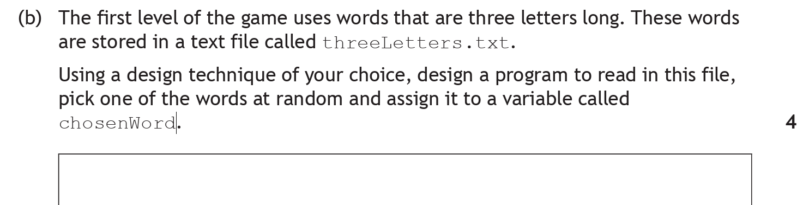
The context is that a game is created where users guess the word, that is selected at random, based on a picture.
What Is The Question Asking?
Remember this question is 4 Marks. Some important points:
- The file we are reading from is called
threeLetters.txt. We must use this filename - Our solution must read data from the above file
- One of the words in the file, once loaded into the program, must be chosen at random and assigned to the variable
chosenWord - The question asks for us to use "a design technique of our choice". This means we can freely use psuedocode, and don't have to fully abide by things like
[counter]for arrays or dot notation for array of records. Our logic still needs to be correct, but we can be a bit less formal in our solution
Working Through the Answer
Step 1: What data Structure do I need
I know that I am reading threeLetters.txt, but what data structure should I use?.
I am not given any sample data, but I can see that it is a .txt file. This means that it will be one piece of data per line. As there is only one piece per line, I am only storing a list of the same data type, so I can just use a basic array.
Remember, we can just use psuedocode for this solution. (You can use python or any other programming language if you want to)
Initialise array called wordsArray of type string
Step 2: Open the file
Now we have our data structure, we need to open the file. Remember, we need to use the name given in the question.
Open file threeLetters.txt
This, along with step 5, would gain 1 Mark.
Step 3: Read the file into the data structure
Now we need to read the data from the open file into our data structure.
Loop through each line in the file Append the current word from threeLetters.txt to the wordsArray
Reading the contents of the file to your data structure would gain 1 Mark
Step 4: Generate your random number
In order to pick a word at random, we need to generate a random number between 0 and the length of the list (or file).
randomNumber = generate random number between 0 and the length of the list
This gains 1 Mark.
Step 5: Assign the random word to chosen word
Now we need to take the random number, and get the word at that position in words array, and assign it to chosenWord.
chosenWord = wordsArray at position randomNumber
This gains 1 Mark.
Step 6: Close the file
Lastly, we need to close threeLetters.txt.
Close threeLetters.txt
This, along with step 2, gains 1 Mark.
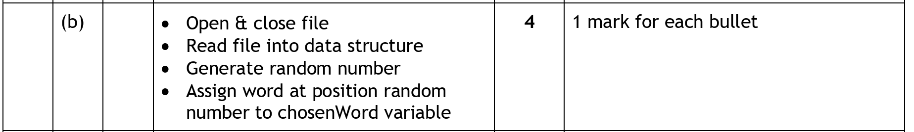
Suggested answer
So our solution above put together would be:
Initialise array called wordsArray of type string Open file threeLetters.txt Loop through each line in the file Append the current word from threeLetters.txt to the wordsArray Close threeLetters.txt randomNumber = generate random number between 0 and the length of the list chosenWord = wordsArray at position randomNumber
The Python version would be:
wordsArray = []
wordsFile = open("threeLetters.txt", "r")
wordList = wordsFile.readLines()
for word in wordList:
wordsArray.append(word)
wordsFile.close()
randomNumber = random.randint(0, len(wordsArray)
chosenWord = wordsArray[randomNumber]
Writing to a File
Writing to a file uses write mode ("w"). This creates the file if it does not exist, but be careful — it overwrites whatever was previously in the file. The write() function saves data to the file, and you must close() the file when finished.
The write() can basically act as a substitute for a print statement, as the message within the brackets will be the same regardless, (unless you want to write to the file across multiple lines).
messagefile = open("message.txt", "w")
messagefile.write("Bla bla, this message will be saved in the file")
messagefile.close()
Here, the message Bla bla, this message will be saved in the file will be written to the file message.txt.
animalfile = open("animals.txt", "w")
elephant = "Arthur"
animalfile.write(elephant)
animalfile.close()
Here, the contents of the variable elephant, which is Arthur will be written to the file animals.txt.
If we want to write a message that contains a variable, this works in the same way as a print.
pupilFile = open("marks.txt", "w")
pupilFile.write(pupilName + " got the mark " + percentage + "%")
pupilFile.close()
Writing Multiple Lines
To write several entries on separate lines, add the newline character "\n" to the end of each piece of data.
Let's say we have the following list of names stored in an array called outputNames:
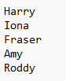
outputFile = open("names.txt", "w")
for counter in range(len(outputNames)):
outputFile.write("The name is " + outputNames[counter] + "\n")
outputFile.close()
The output, if we did not have the "\n" would be:
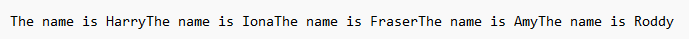
The output, with the "\n" would be:
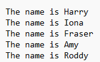
Writing to a File — Video Explanation
Normally, if writing to file is required in the exam, it will be a small piece of a larger question. You are more likely to be asked to do this in the coursework, and you will have to have knowledge of both reading & writing to file in Data Flow Questions.
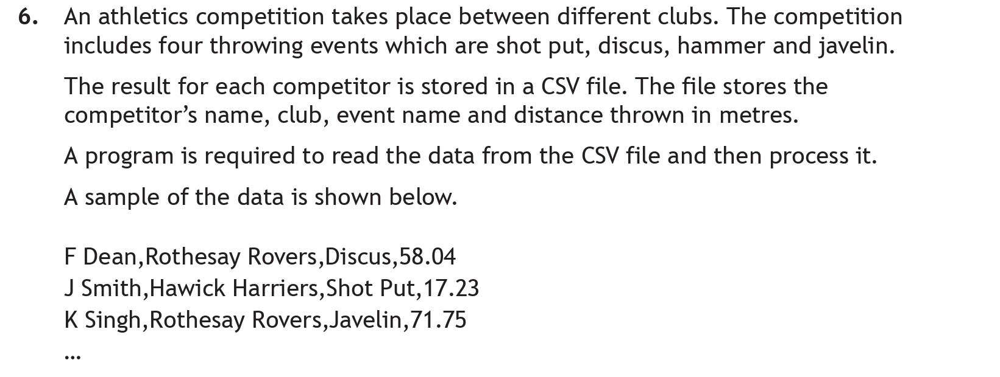
A record structure, and an Array of Records of size 800 was created in part a), and is needed for this question. If you need a refresher of how to do this, go to the Data Structures page.
The record & array of record structure are:
DECLARE athlete AS RECORD (STRING: athleteName, STRING: club, STRING: event, REAL: distance) DECLARE athleteArray AS ARRAY OF RECORD athlete () * 800
What Is The Question Asking?
Remember this question is 5 Marks. Some important points:
- Check if the athlete's event was Javelin
- Check if their distance was 70 metres or more
- Do this for all 800 athletes
- If there are any who meet this criteria, create a file and write their name, and club to it.
Working Through the Answer
Step 1: Open The File
In this case, I may need to add multiple athletes to the file, so rather than opening and closing it within the loop, I will do this before and then close it after.
javelinFile = open("javelin.csv", "w")
If using python, you must make sure it is open in write mode - "w".
This, along with step 5, would gain 1 Mark.
Step 2: Loop through all athletes
Like all standard algorithms, I need to loop through my data structure
for counter in range(len(athleteArray)):
This would gain 1 Mark.
Step 3: Complex Condition
I now need to check: if the athlete's event is javelin, and if their distance thrown is 70 or more.
As this is a design technique question, I don't need to make sure I use correct dot notation/etc, although it is still good practice to do so, as this is required in part c) - (See practice question for linear search)
if athleteArray[counter].event == "Javelin" and athleteArray[counter].distance >= 70:
The following would gain 1 Mark each:
- The event condition
- AND the distance (remember >=, not just >, it is 70 or more)
Step 4: If both conditions are true, Write to the file
Now, if the conditions are true, I want to write that athletes data to the file. I only want the name, and club though.
javelinFile.write(athleteArray[counter].athleteName + ", "+ athleteArray[counter].club + "\n")
This gains 1 Mark.
Step 5: Close the file
Finally, I need to close the file after the loop has terminated.
javelinFile.close()
This, along with step 1, gains 1 Mark.
The above was in python, but you can see a more basic pseudocode version in the marking instructions below. Remember that for a "programming language of your choice" question, you must use the array, and dot notation correctly as I have done above. You only get away with the sample answer in the marking instructions below if it is a "design technique of your choice question".
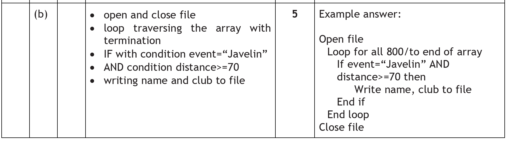
Suggested answer
So our solution above put together would be:
javelinFile = open("javelin.csv", "w")
for counter in range(len(athleteArray)):
if athleteArray[counter].event == "Javelin" and athleteArray[counter].distance >= 70:
javelinFile.write(athleteArray[counter].athleteName + ", "+ athleteArray[counter].club + "\n")
javelinFile.close()